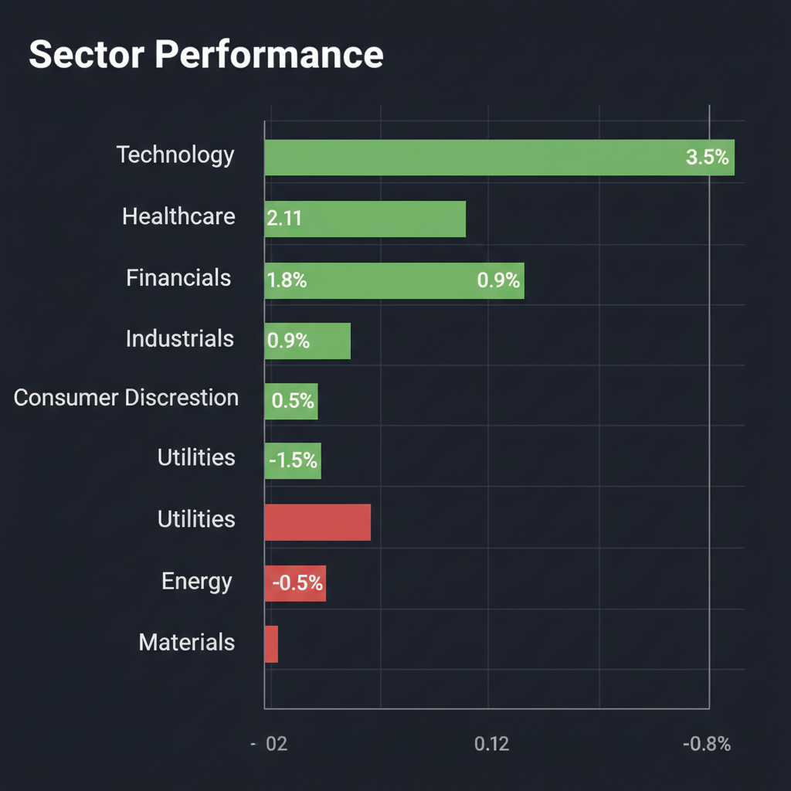
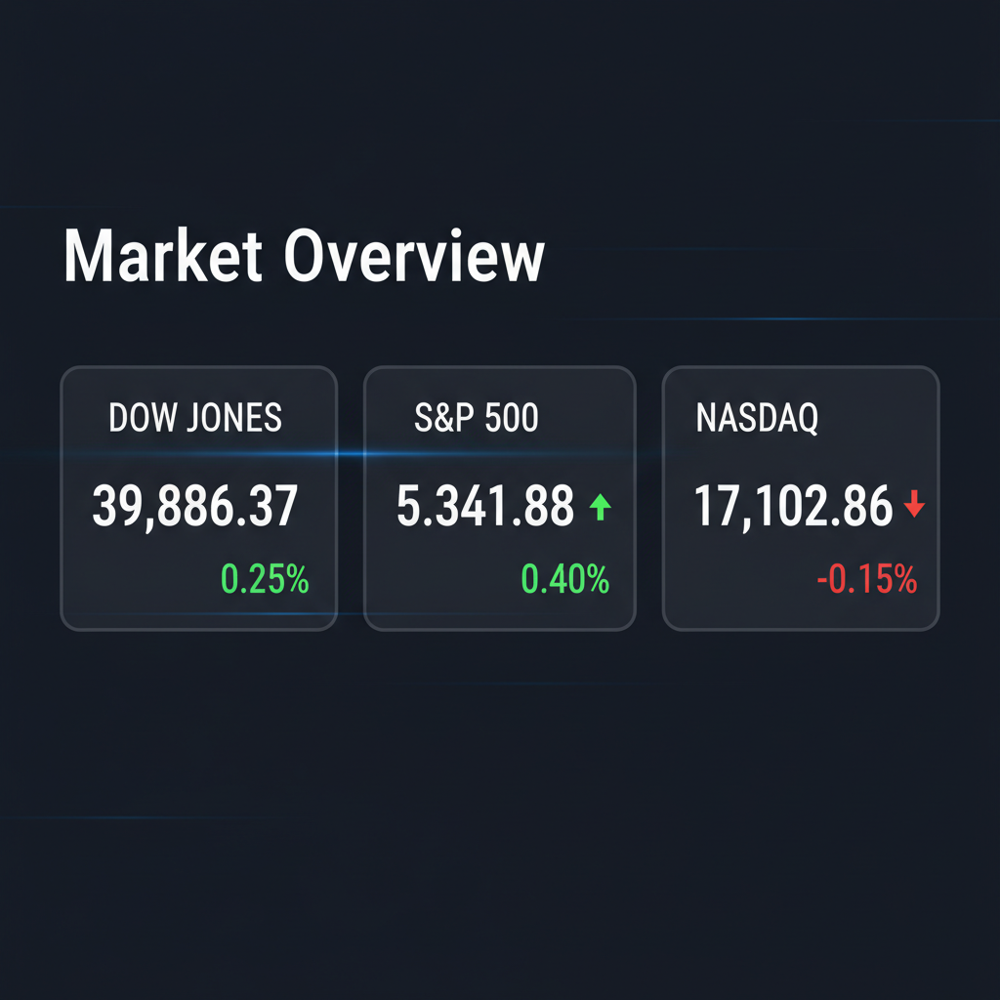

Daily Investment Report - 2026-04-03
Generated: 2026/4/3 8:16:47


1. エグゼクティブサマリー
- 中東の地政学リスク（ホルムズ海峡封鎖懸念・原油高）によるインフレ再燃懸念と、個別企業の底堅い業績期待が綱引きをする神経質な相場環境です。
- 原油価格の高騰による「インフレ・金利高止まり」を前提とし、エネルギーや防衛・サイバーセキュリティ関連への資金逃避（セクターローテーション）が進行しています。
- パニック売りは避けつつも現金比率を高めてリスクを管理し、バリュエーションが低く財務基盤の強固な優良中小型株への選別投資を行うことが推奨されます。
2. 注目銘柄リスト
強気（買い推奨）
- Esperion Therapeutics (ESPR) [小型枠]: 大塚製薬のロイヤルティを担保に非希薄化での5,000万ドルの資金調達に成功し、バイオ特有の資金枯渇リスクを払拭しました。有望な新薬獲得により急成長が見込まれ、安全マージンの高い隠れた成長株です。
- クスリのアオキ (3549) [約1,000億円]: 堅調な営業キャッシュフローとPER10倍台半ばという割安感を併せ持ち、インフレ下でも需要が落ちにくいディフェンシブな良質銘柄です。
- 西松屋チェーン (7545) [中小型枠]: インフレ環境下でも強力な価格競争力と無借金経営による強固な財務基盤（FCF）を持っており、下値リスクが限定的です。
- マルマエ (6264) [約300億円]: クラウド施設への地政学的脅威を受けた「インフラの物理的分散化」という新たなテーマにおいて、半導体関連特需の恩恵を受けやすいニッチトップ企業です。
中立（様子見）
- 霞ヶ関キャピタル (3498) [中小型枠]: 物流2024年問題などの社会課題を解決する成長ストーリーと好決算は魅力的ですが、有利子負債が多くインフレ下での金利上昇リスクがあるため、テクニカルなエントリーポイントを慎重に探る局面です。
- Levi's (LEVI) [中型枠]: アパレルは裁量消費セクターであり、インフレとガソリン価格高騰による消費者マインドの冷え込みが粗利率に与える影響を決算で確認するまでは手出し無用です。
弱気（警戒）
- Delta Air Lines (DAL) [中大型枠]: 原油先物の急騰によるジェット燃料費の高騰が利益率をダイレクトに直撃するため、決算時のコスト・ガイダンスで大幅な下方修正が出るリスクに強く警戒すべきです。
- 地域スポーツネットワーク（RSN）関連銘柄 [小型枠]: 視聴率は維持していても配信コスト増などで利益率が圧迫されており、PERが低く見えても投資してはいけないバリュートラップ（割安の罠）の典型です。
3. セクター推奨ランキング
物理的なデータセンターが軍事目標となったことで、「国防としてのテクノロジー」へのパラダイムシフトが起き、国家や企業レベルでのインフラ防衛・分散化投資が爆発的に増加します。
- 2位：エネルギー（探鉱・生産）および代替エネルギー
中東の軍事衝突とホルムズ海峡封鎖リスクによりエネルギー供給が極度に逼迫しており、中東に依存しない自律的な供給網を持つ企業のプレミアムが高まっています。
SpaceXの史上最大規模のIPO観測を起爆剤とし、地上・海上の地政学リスクから完全に隔離された宇宙空間の通信・データ網を支える関連小型株へ機関投資家の資金が流入します。
サッポロHDの不動産売却事例に見られるように、マクロ環境の不確実性が高い局面では、外部環境に左右されない企業自身の構造改革（低PBR是正）が最も確実な株価上昇ドライバーとなります。
4. 今週の注目イベント
- 4月3日：日本株12社（マルマエ、ワールド、あさひ等）の決算発表
- 今週予定：米国の主要なインフレデータ（CPI/PCE等）の発表
- 今週予定：米国主要企業（Levi's、Delta Air Lines）の決算発表
- 今週随時：国連におけるホルムズ海峡再開に向けた協議および決議案の採決
- 今週随時：SpaceXの新規株式公開（IPO）準備に関する続報
5. リスク要因
- 中東の全面衝突およびホルムズ海峡封鎖による、原油価格のコントロール不能な急騰（さらなる供給ショック）リスク。
- インフレ再燃によるFRBの「年内利下げシナリオ」の崩壊と、物価高と景気減速が同時に進行するスタグフレーションの現実化リスク。
- 原油高と円安の進行による日本国内の強烈な輸入インフレと、日銀の早期追加利上げに伴う不動産など有利子負債過多セクターへの打撃。
- クラウドデータセンター等への連鎖的なサイバー・物理的攻撃による、金融システムやサプライチェーンの広範な機能不全リスク。
- VIX（恐怖指数）急上昇下における一時的な反発（ショートカバー）に飛び乗り、その後の急落に巻き込まれるブルトラップ（買いのダマシ）リスク。
6. アクションアイテム
- 資本の「保全」を最優先とし、ポートフォリオのリスク資産エクスポージャーを通常の半分程度に落とし、現金比率を40%以上に引き上げる。
- 日中の極端なボラティリティ・スパイクによるストップ狩りを避けるため、通常設定の1.5倍〜2倍の広めのストップロスを設定してリスクを管理する。
- 市場急落（テイルリスク）に備え、VIXコールオプションやインバースETFを活用したポートフォリオのダウンサイド保護（ヘッジ）を構築する。
- 割高な大型ハイテク株への過度な集中を是正し、地政学リスクやインフレに強いエネルギー銘柄やサイバーセキュリティ関連へ資金を分散させる。
- 突発的なヘッドライン（ニュース）での追っかけ買いは厳禁とし、打診買いを行う際は、必ず主要なサポートラインでの反発と出来高の増加をテクニカルに確認してから実行する。